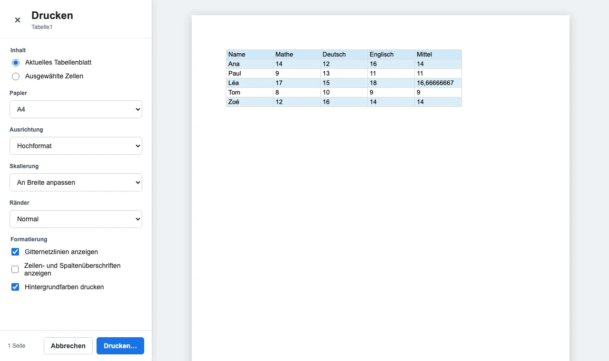

Datei › Drucken… oder Strg P zeigt die Seiten, wie sie gedruckt werden.

| Einstellung | Auswahl |
|---|---|
| Inhalt | das aktive Blatt oder die vor dem Öffnen des Fensters ausgewählten Zellen |
| Papier | A4, Letter |
| Ausrichtung | Hochformat, Querformat |
| Skalierung | Originalgröße; An Breite anpassen: alle Spalten auf einer Seitenbreite; Auf eine Seite anpassen |
| Ränder | normal, schmal, breit |
| Formatierung | Gitternetzlinien, Zeilen- und Spaltenköpfe, Hintergrundfarben |
Drucken… öffnet das Fenster des Browsers, in dem der Drucker oder das Speichern als PDF gewählt wird.
- Nur die Zellen mit ihrer Formatierung werden gedruckt: weder Diagramme noch Bilder noch Sparklines.
- Ausgeblendete Zeilen und Spalten werden nicht gedruckt.
- Ein Kontrollkästchen wird als TRUE oder FALSE gedruckt.
- Es wird jeweils ein Blatt gedruckt.
Um mit den Diagrammen zu drucken, die Mappe speichern und in Excel oder LibreOffice öffnen.